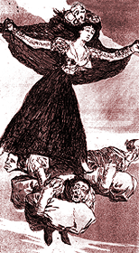

Samhain
Samhain 
|
Summer's End
Happy New Year! We're still going to party til it's 1999, but those in the know know that the Samhain (pronounced "sow" to rhyme with "how now brow' cow") celebration is the pagan New Year. Your children are certainly anticipating it, but they're probably calling it "Halloween." Derived from Celtic tradition, Samhain greets the harvest and the coming of winter with the belief that the walls between the worlds of the living and dead are at their thinnest on this particular eve, that restless souls can visit the land of the living on this night, and that foolish mortals can lose their way into a nether world as the black of evening falls. Druidic tradition dictates that one leave an offering of food for the eternally hungry souls of the dead, that this is a grand time to cast fortunes and make predictions, that great wars fought on this day will be won. Perched exactly six months on the calendar from the spring celebration of Beltane, Samhain signaled to ancient Celtic peoples--who were pastoral rather than agricultural--the necessity for bringing their livestock down from summer pastures to the safety of winter pens . Ill or weak animals were killed to save fodder during winter's lean, their meat feasted upon and then cured against the coming months. Contrary to what some fanatics may assert, the Celts did not indulge in human sacrifice, drink goblets of blood, nor pluck plump babies from their cribs. They did believe in the spirits of the land, the power of the dead to still haunt the earth (at least in one's pysche or soul), and in the mysticism of nature itself. It was customary to visit from house to house on this night, caroling songs and enjoying strong drink, and many party-goers carried turnips carved with eerie visages--the precursors to today's jack o' lanterns. Samhain is also a time to indulge in divination. Bobbing for apples was popular: the first to grab an apple with her teeth was believed to be the first to marry in the new year. Apples were also peeled, the length of an unbroken peel either predicting the length of one's life or being flung to the ground to fall in the shape of the first letter of a lover's name. Allowing a snail to crawl through the hearth's cooling ashes could also reveal the shape of a beloved's name, and hazel nuts popping or cracking in the fire could answer questions about a true love's intentions. This was a night to study the Tarot and sip down to the tea's leaves for answers, to honor the dead and enjoy the neighbors, to prepare for the long dark days that lay in wait.

Bewitched
The traditional images of Halloween in the Western world include ghouls, ghosts, and witches riding broomsticks. While few of us may actually have ever had any discourse with ghouls and ghosts, the witch on the broomstick image does emanate from actual tradition.
In touch with the natural world, ancient pagans--healers, midwives, and the like--discovered the hallucinative effects of oils distilled from sebaceous plants of the potato family, including Deadly Nightshade (Atropa belladonna), Mandrake (Mandragora), Henbane (Hyoscyamus), and Thorn apple (Datura), all of which contain a substance known as atropine. Atropine, a naturally occuring hallucinogen, has many interesting properties: it can be very toxic and cause death if taken in extraordinary amounts, is readily absorbable through the skin, and has been used since ancient times in the shamanistic ceremonies known to the early Christian church as "witchcraft."
Used to promote a loosening of inhibitions, for vision quests, and in the search for sexual ecstasy, these green oils, purported to be "raw smelling," additionally seem to evoke a sense of loftiness, even in modern day imbibers. When the mystic writer Carlos Castaneda experimented with a datura-based ointment in the 1950s, he reported hallucinations of flight.
Because of its ready osmosis through thin layers of skin, atropine-containing oil would be rubbed on the delicate tissue of belly or under the arms. Some women would also anoint a phallic object--such as a broomstick--with the oil, using the point to insert the atropine "potion" into the thin membrane of the vagina, where it would be most readily absorbed. The subsequently reported feelings of flight indicate how literally transported these worshippers, who were often in a resulting unconscious state for 24 hours, felt.
Writing in his treatise Hallucinogens and Shamanism (Oxford Press), editor Michael J. Harner concludes that use of atropine drugs was highly ritualized in medieval Europe. Unlike shamans and mystics of other cultures, who used such drugs as peyote to transport themselves during religious ceremonies, European shamans would be rendered so completely flat-out by atropine-based ointments that they would surely be unable to perform ritual while under its influence. Therefore, he argues, it was saved for Sabat encounters with spirits of the unseen world, not for what he terms the "business meetings" of the Esbat, where pagan seekers met to aid one another. "Unlike classical shamans," he writes, "the sorcerer in Europe had his trance encounters with the spirit world on occasions distinguished from his manipulation of that supernatural world."
Back to the Table of Contents.
Surf the Boulevards network
to other great alternative
content sites.
|